Hold, speak, release
Hold the shortcut in any app and speak. Release the keys, and the text goes where your cursor is.
Hold the shortcut in any app and speak. Release the keys, and the text goes where your cursor is.
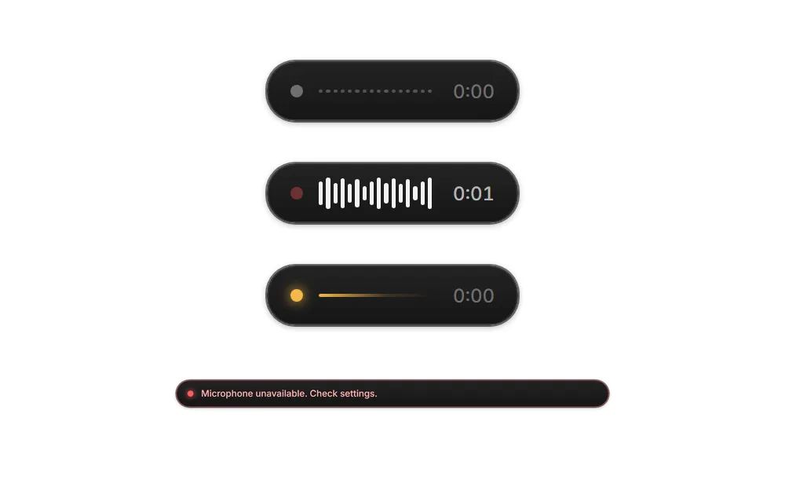
A pill at the bottom of the screen shows the time, a live waveform and errors.
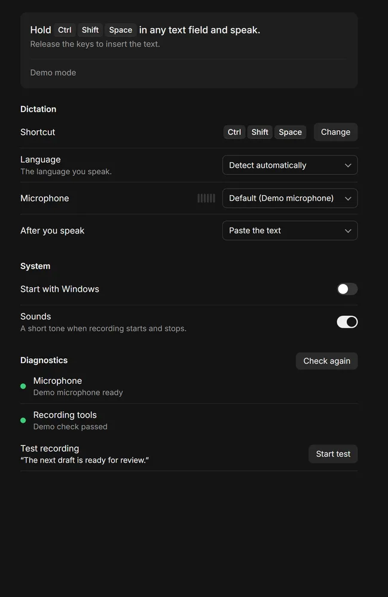
Sign in with codex login. The app uses the same transcription as the microphone button in the Codex desktop app.
Screens and the trailer use demo text.
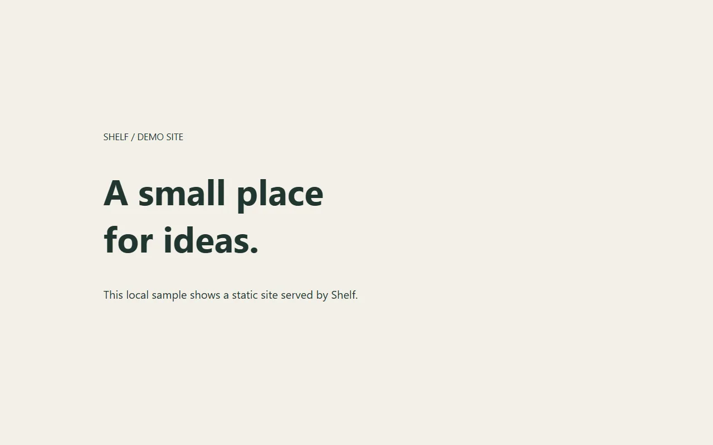
shelf upload ./notes notes puts a folder online. Before the upload, the CLI finds broken links and secrets.
A new site is private. Make it public to show it on the Index page. Archive takes it offline and keeps the files.
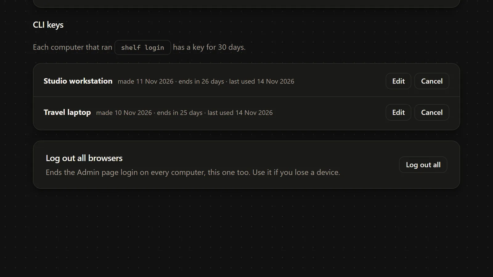
The CLI logs in through the browser, like gh auth login. You can cancel each key from the Admin page.
Screens use demo sites and a demo Owner.

The taskbar shows one line for Claude and one for Codex. Hover it to see the 5-hour and 7-day windows and when each one resets.
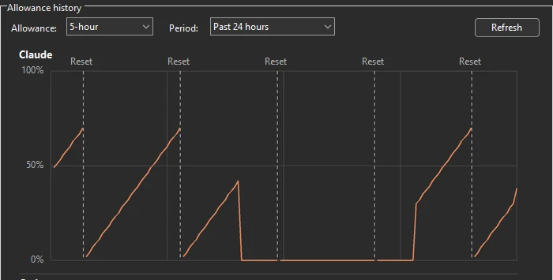
The app saves each reading in SQLite for 31 days. Two charts show how fast you use each limit and when it resets.
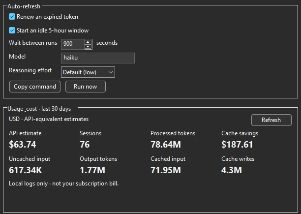
It reads the token counts in the Claude Code and Codex logs on your computer. It shows an estimated cost, the sessions and the cache savings.
Screenshots of the real app with demo numbers. The Usage tab and the cost summary are new and not in a release yet.
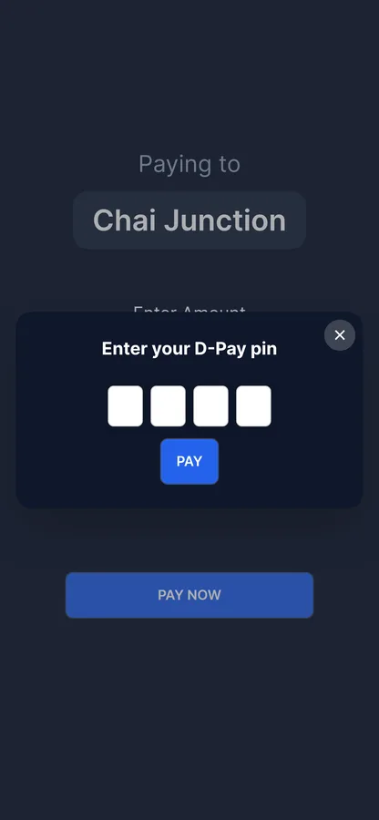
Each payment is one database transaction. It is fully done, or it is not done.
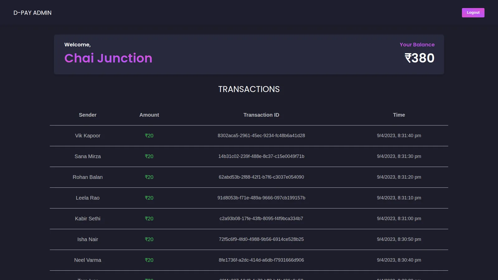
A Go service sends each new order to the stall screen over a WebSocket.
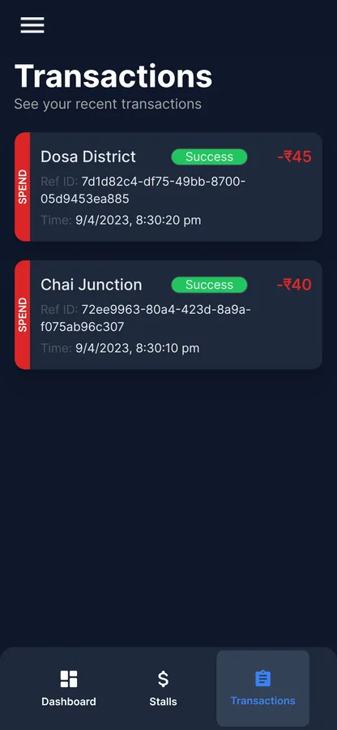
Each payment writes two ledger entries. Row locks stop double spending.
Screenshots use demo data.
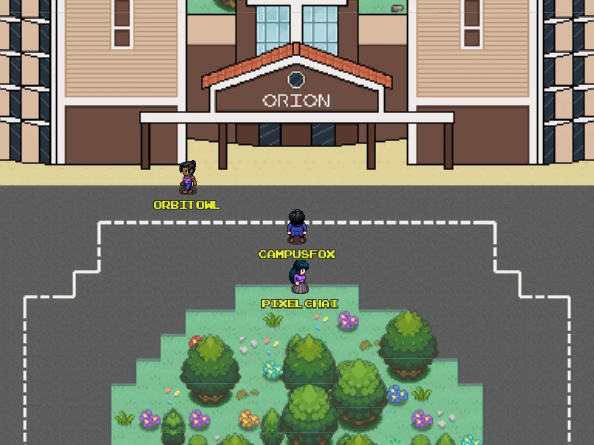
The main gate, Admin, Octa, Orion, LHC, the Library, the Barn and NSO.
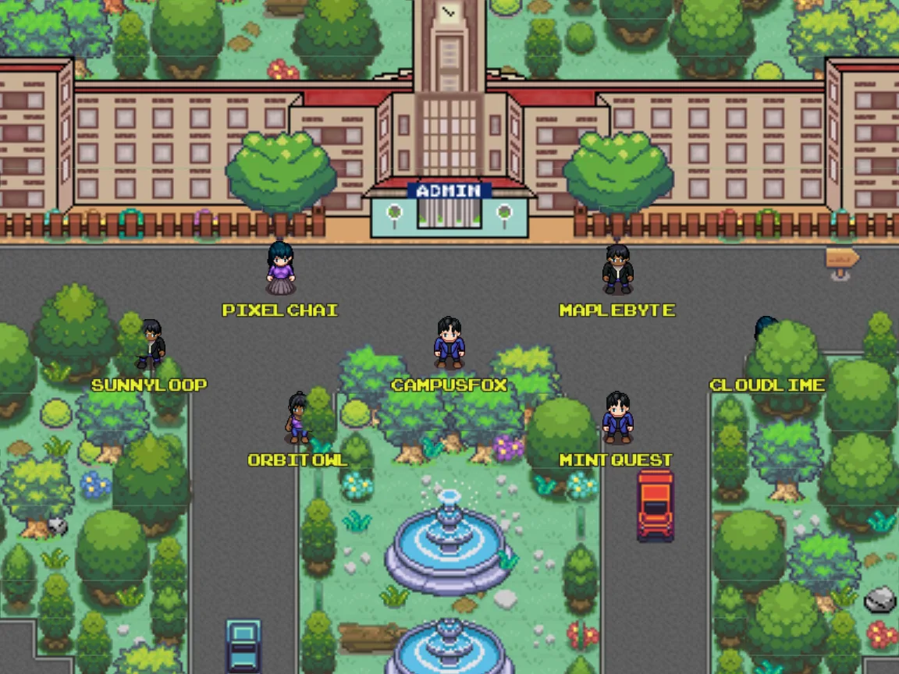
A Go server sends the position of each player over WebSockets. Chat and video calls are in the game.
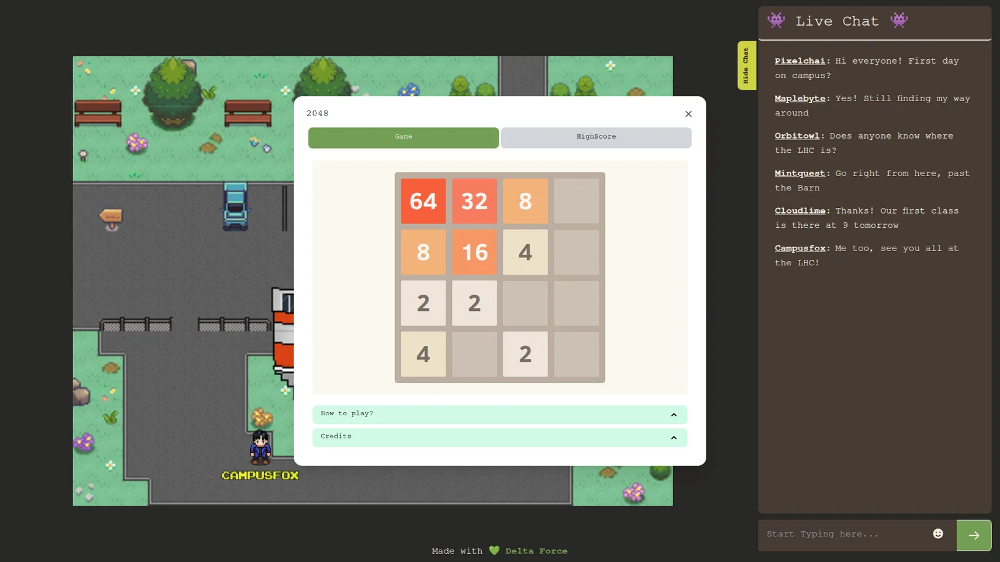
Four minigames: 2048, Hextris, Pacman and Stack. Each game has a leaderboard.
The live site is offline. I ran it again locally, with test players, to record these screens.